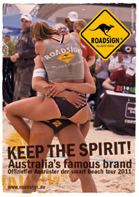
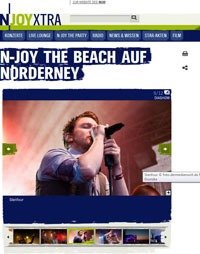

FotoVita Seit meiner frühesten Jugend ist die Fotografie meine Leidenschaft. Angefangen mit einer kleinen analogen Kompaktkamera über eine Nikon Coolpix sowie Canon Powershot fotografiere ich mittlerweile mit einer Nikon D90. Technik hin oder her: Der besondere fotografische Blick ist entscheidend. Und so ließen die ersten Erfolge auch nicht lange auf sich warten. Neben vielen privaten Motiven und Experimenten, welche unter flickr zu sehen sind, konnte ich mittlerweile kommerziell viele Fotos von Events vermarkten.
Referenzen ROADSIGN australia® ROADSIGN australia® wurde 1985 in Australien gegründet und bietet heute eine der umfangreichsten Lifestyle-Kollektionen, welche auf dem Markt verfügbar sind. Seit ein paar Jahren ist ROADSIGN auch in Deutschland erhältlich. Mittlerweile auch über einen eigenen Online-Shop. Mein Schnappschuss "steffi loves anni" enstand im Juni 2010 im Rahmen der nationalen Beachvolleyball-Serie smart-beach-tour in Münster. Die Protagonisten Anni Schumacher und Steffi Hüttermann hatten gerade ihr erstes Finale der Tour gewonnen. Das Foto wurde von ROADSIGN australia® als eines der Leitmotive für die smart-beach-tour 2011 eingesetzt. Verwendung fand es hierbei insbesondere bei Ankündigungspostern sowie Bannerpostern in den VIP-Zelten der Tour, dem offiziellen Tourguide sowie dem Magazin "Beachfiles" welches zur deutschen Beachvolleyball Meisterschaft verteilt wurde.
music nights Norderney / n-joy Die fotos der music nights auf Norderney enstanden im Juli 2010. An vier aufeinander folgenden Tagen standen jeweils musikalische Highlighs auf der Bühne. Einige Fotos wurden vom Veranstalter der music nights sowie dem Radiosender n-joy auf deren Webseite präsentiert im Rahmen einer Slideshow zum Konzertrückblick n-joy the beach auf norderney sowie in mehreren Presse-Berichten. Weitere Fotos zu den music nights auf flickr
|
|
|
| oli…@dermedienwirt.de | Impressum |